3d. Evaluate bed demand predictions by hospital service
In notebook 3c I predicted bed counts by hospital service for one group snapshot. Here I evaluate those predictions across the test set using the approaches from notebook 3b (histograms of observed minus expected, and EPUDD plots).
I also ask whether routing patients to specialties using consult sequences (the model from 3c) beats a naive alternative: give every patient the same specialty mix, taken from training-set averages (for example 45% medical, 30% surgical, …). A table of mean absolute errors (MAE) summarises that comparison across services; EPUDD plots show how predictions differ from observations for individual services.
Data requirements
| Column / dataset | Used for |
|---|---|
ed_visits with snapshot_date, prediction_time, is_admitted, specialty |
ED-current bed demand (admitted_at_some_point) |
inpatient_arrivals with specialty |
Baseline specialty proportions from the training set |
You can request the UCLH datasets on Zenodo. If you do not have the public data, set data_folder_name to 'data-synthetic'.
For the same PMFs through patientflow.evaluate (EvaluationInputsBuilder and run_evaluation), see notebook 4d.
# Reload functions every time
%load_ext autoreload
%autoreload 2
Load data and train models
prepare_prediction_inputs trains admission models at each prediction time and a hospital service model, as in notebooks 3b and 3c.
from datetime import timedelta
import pandas as pd
from patientflow.load import get_model_key
from patientflow.model_artifacts import ServiceModels
from patientflow.prepare import create_temporal_splits
from patientflow.predict.demand import FlowSelection
from patientflow.train.emergency_demand import prepare_prediction_inputs
data_folder_name = "data-public"
prediction_inputs = prepare_prediction_inputs(data_folder_name, verbose=False)
admissions_models = prediction_inputs["admission_models"]
spec_model = prediction_inputs["specialty_model"]
ed_visits = prediction_inputs["ed_visits"]
inpatient_arrivals = prediction_inputs["inpatient_arrivals"]
specialties = prediction_inputs["specialties"]
params = prediction_inputs["config"]
model_name = "admissions"
prediction_window = timedelta(minutes=params["prediction_window"])
prediction_times = list(params["prediction_times"])
start_training_set = params["start_training_set"]
start_calibration_set = params["start_calibration_set"]
start_validation_set = params["start_validation_set"]
start_test_set = params["start_test_set"]
end_test_set = params["end_test_set"]
_, _, _, test_visits_df = create_temporal_splits(
ed_visits,
start_training_set,
start_validation_set,
start_test_set,
end_test_set,
col_name="snapshot_date",
visit_col="visit_number",
verbose=False,
start_calibration=start_calibration_set,
)
test_snapshot_dates = [
d.date()
for d in pd.date_range(start_test_set, end_test_set, freq="D", inclusive="left")
]
Generate predicted distributions by hospital service
Notebook 3c called get_prob_dist for one group snapshot at a time, weighting admission probabilities by the specialty model. Here I use get_prob_dist_by_service to build the same specialty-weighted PMFs for every prediction time and snapshot date in the test set, and store the results as {model_key: {specialty: {snapshot_date: leaf}}} where each leaf is a small dict holding agg_predicted (the PMF) and agg_observed (the count on that snapshot).
This is also the first use in the 3x notebooks of two production helpers that notebook 4a explains in full:
FlowSelection— a small config object saying which patient flows to include. Here I useFlowSelection.custom(...)with onlyinclude_ed_current=True, because this notebook evaluates bed demand from patients already in the ED.ServiceModels— bundles the trained models for one prediction time. Here that is the admission classifier and specialty router.
The plotting helpers in the next sections read that nested structure:
calc_mae_mpe— mean absolute error and mean percentage error across snapshot dates (scalar summary per prediction time).plot_deltas— histograms of observed minus expected values from those scalars.plot_epudd— EPUDD charts comparing the full predicted distribution to observed counts at each snapshot.
from patientflow.aggregate import get_prob_dist_by_service
from patientflow.predictors.value_to_outcome_predictor import ConstantSpecialtyProbs
# FlowSelection: which patient flows to include in the prediction.
# This notebook evaluates ED-current bed demand only.
flow_sel_ed_current = FlowSelection.custom(
include_ed_current=True,
include_ed_yta=False, # yet-to-arrive ED admissions
include_non_ed_yta=False, # yet-to-arrive non-ED emergency admissions
include_elective_yta=False,
include_transfers_in=False,
include_departures=False,
)
def build_ed_current_distributions(spec_predictor) -> dict:
"""Build {model_key: {specialty: {snapshot_date: leaf}}} for one routing model."""
by_model_key: dict = {}
for prediction_time in prediction_times:
model_key = get_model_key(model_name, prediction_time)
# ServiceModels: bundle the models needed for this prediction time.
service_models = ServiceModels(
prediction_time=prediction_time,
prediction_window=prediction_window,
ed_classifier=admissions_models[model_key],
spec_model=spec_predictor,
)
# Returns {specialty: {snapshot_date: {agg_predicted, agg_observed}}}.
by_specialty = get_prob_dist_by_service(
test_visits_df,
test_snapshot_dates,
prediction_time,
service_models,
specialties,
prediction_window,
flow_selection=flow_sel_ed_current,
component="arrivals",
observation_mode="admitted_at_some_point",
use_admission_in_window_prob=False,
verbose=False,
)
by_model_key[model_key] = by_specialty
return by_model_key
prob_dist_dict_all = build_ed_current_distributions(spec_model)
Evaluate predictions by hospital service
Use calc_mae_mpe and plot_deltas for scalar summaries and delta histograms across snapshot dates, and plot_epudd to inspect distribution shape.
from patientflow.evaluate import calc_mae_mpe
from patientflow.viz.observed_against_expected import plot_deltas
for specialty in specialties:
specialty_prob_dist = {
model_key: dist_dict[specialty]
for model_key, dist_dict in prob_dist_dict_all.items()
}
results = calc_mae_mpe(specialty_prob_dist)
plot_deltas(
results,
suptitle=f"Histograms of observed - expected values for {specialty} service",
show=True,
)
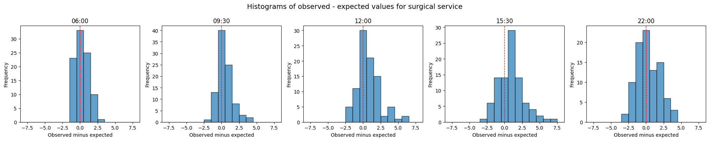
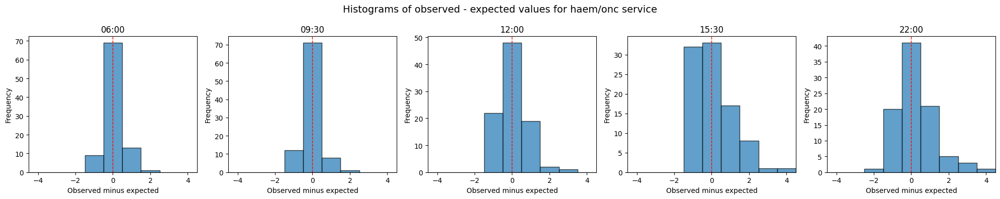
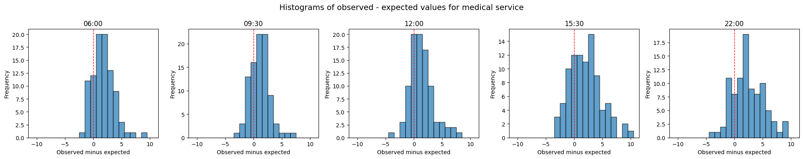
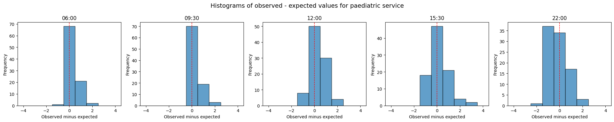
from patientflow.viz.epudd import plot_epudd
for specialty in specialties:
specialty_prob_dist = {
model_key: dist_dict[specialty]
for model_key, dist_dict in prob_dist_dict_all.items()
}
plot_epudd(
prediction_times,
specialty_prob_dist,
model_name=model_name,
suptitle=f"EPUDD plots for {specialty} service (sequence predictor)",
)
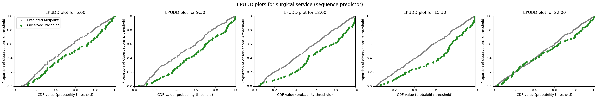
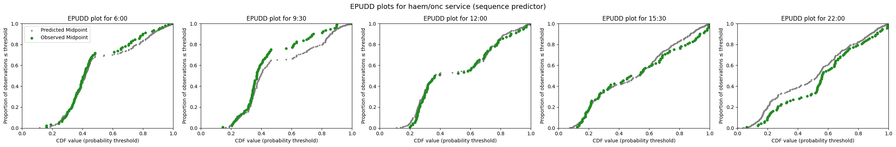
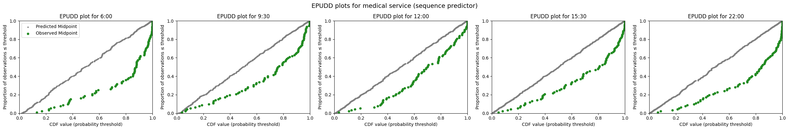
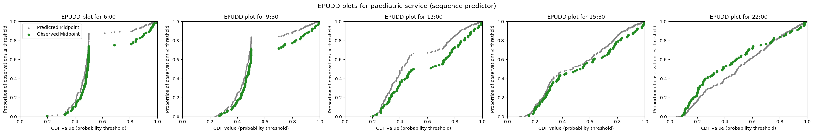
Compare with a baseline: average specialty proportions
The baseline gives every patient the same probability of admission to each hospital service, based on training-set averages from inpatient_arrivals. Positive mae_reduction means the sequence predictor has lower mean absolute error than the baseline.
inpatient_arrivals = inpatient_arrivals.copy()
inpatient_arrivals["arrival_datetime"] = pd.to_datetime(
inpatient_arrivals["arrival_datetime"], utc=True
)
train_inpatient_arrivals_df, _, _, _ = create_temporal_splits(
inpatient_arrivals,
start_training_set,
start_validation_set,
start_test_set,
end_test_set,
col_name="arrival_datetime",
verbose=False,
start_calibration=start_calibration_set,
)
baseline_probs = (
train_inpatient_arrivals_df["specialty"].value_counts(normalize=True).to_dict()
)
baseline_spec_model = ConstantSpecialtyProbs(baseline_probs)
prob_dist_dict_all_baseline = build_ed_current_distributions(baseline_spec_model)
comparison_rows = []
for specialty in specialties:
model_dist = {
model_key: dist_dict[specialty]
for model_key, dist_dict in prob_dist_dict_all.items()
}
baseline_dist = {
model_key: dist_dict[specialty]
for model_key, dist_dict in prob_dist_dict_all_baseline.items()
}
model_results = calc_mae_mpe(model_dist)
baseline_results = calc_mae_mpe(baseline_dist)
for model_key in model_results:
model_mae = model_results[model_key]["mae"]
baseline_mae = baseline_results[model_key]["mae"]
comparison_rows.append(
{
"specialty": specialty,
"model_key": model_key,
"mae_sequence": model_mae,
"mae_baseline": baseline_mae,
"mae_reduction": baseline_mae - model_mae,
}
)
comparison_df = pd.DataFrame(comparison_rows)
from IPython.display import display
display(comparison_df)
| specialty | model_key | mae_sequence | mae_baseline | mae_reduction | |
|---|---|---|---|---|---|
| 0 | surgical | admissions_0600 | 0.801679 | 0.858141 | 0.056463 |
| 1 | surgical | admissions_0930 | 0.861672 | 0.887846 | 0.026173 |
| 2 | surgical | admissions_1200 | 1.277388 | 1.437351 | 0.159963 |
| 3 | surgical | admissions_1530 | 1.560773 | 1.667173 | 0.106400 |
| 4 | surgical | admissions_2200 | 1.380850 | 1.408271 | 0.027421 |
| 5 | haem/onc | admissions_0600 | 0.399544 | 0.484354 | 0.084809 |
| 6 | haem/onc | admissions_0930 | 0.390813 | 0.491466 | 0.100653 |
| 7 | haem/onc | admissions_1200 | 0.577235 | 0.628655 | 0.051420 |
| 8 | haem/onc | admissions_1530 | 0.809756 | 0.872876 | 0.063120 |
| 9 | haem/onc | admissions_2200 | 0.721199 | 0.801925 | 0.080726 |
| 10 | medical | admissions_0600 | 1.977793 | 2.073985 | 0.096192 |
| 11 | medical | admissions_0930 | 1.572897 | 1.712363 | 0.139466 |
| 12 | medical | admissions_1200 | 1.747010 | 1.874020 | 0.127010 |
| 13 | medical | admissions_1530 | 2.638974 | 2.931093 | 0.292119 |
| 14 | medical | admissions_2200 | 2.859526 | 3.077419 | 0.217893 |
| 15 | paediatric | admissions_0600 | 0.308607 | 0.464199 | 0.155592 |
| 16 | paediatric | admissions_0930 | 0.329154 | 0.466705 | 0.137551 |
| 17 | paediatric | admissions_1200 | 0.537058 | 0.577504 | 0.040446 |
| 18 | paediatric | admissions_1530 | 0.650287 | 0.751931 | 0.101644 |
| 19 | paediatric | admissions_2200 | 0.740811 | 0.794429 | 0.053618 |
Illustrative EPUDD: baseline vs sequence predictor
Scalars above summarise all services. Below I show EPUDD pairs for haem/onc and paediatric, where the baseline tends to over-predict most clearly.
from IPython.display import display
for specialty in ["haem/onc", "paediatric"]:
model_dist = {
model_key: dist_dict[specialty]
for model_key, dist_dict in prob_dist_dict_all.items()
}
baseline_dist = {
model_key: dist_dict[specialty]
for model_key, dist_dict in prob_dist_dict_all_baseline.items()
}
print(f"\nEPUDD for {specialty}: baseline (historical proportions)")
plot_epudd(
prediction_times,
baseline_dist,
model_name=model_name,
suptitle=f"{specialty} — baseline specialty proportions",
)
print(f"EPUDD for {specialty}: sequence predictor")
plot_epudd(
prediction_times,
model_dist,
model_name=model_name,
suptitle=f"{specialty} — sequence predictor",
)
EPUDD for haem/onc: baseline (historical proportions)
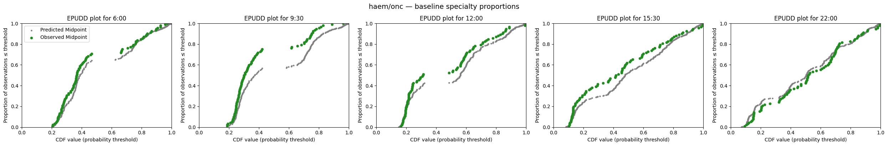
EPUDD for haem/onc: sequence predictor
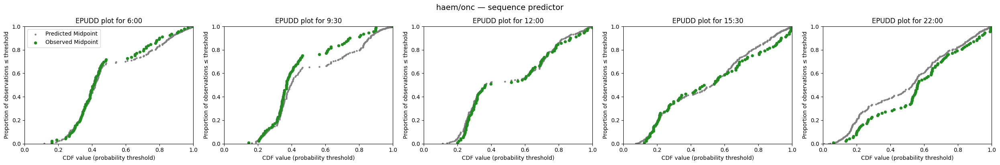
EPUDD for paediatric: baseline (historical proportions)
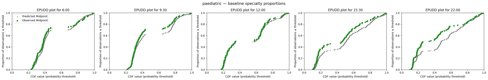
EPUDD for paediatric: sequence predictor
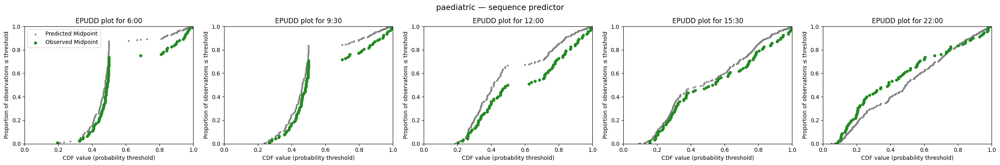
Summary
In this notebook I have shown how to evaluate predicted bed count distributions by hospital service, using the evaluation approaches introduced in notebook 3b. I built specialty-weighted PMFs across the test set with get_prob_dist_by_service, summarised calibration with calc_mae_mpe, and used EPUDD plots to diagnose where predicted and observed distributions differ.
I also compared the sequence specialty predictor from notebook 3c against a baseline that gives every patient the same specialty mix, based on average admission proportions from the training set. Scalar MAE reductions across services support triage; illustrative EPUDD pairs show how the baseline and the sequence predictor diverge for individual services.
For the same PMFs run through patientflow.evaluate (EvaluationInputsBuilder and run_evaluation), see notebook 4d.
In notebooks 3e and 3f, I extend evaluation to patients yet to arrive. The 4x notebooks then show how these functions are assembled into a production system at University College London Hospital to predict emergency demand.